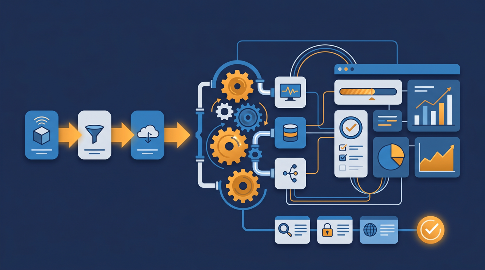
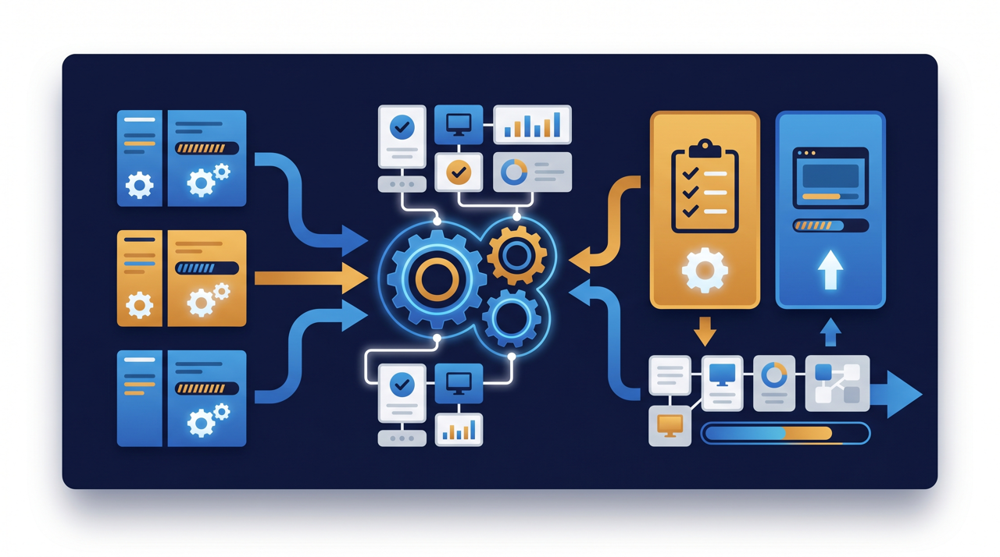
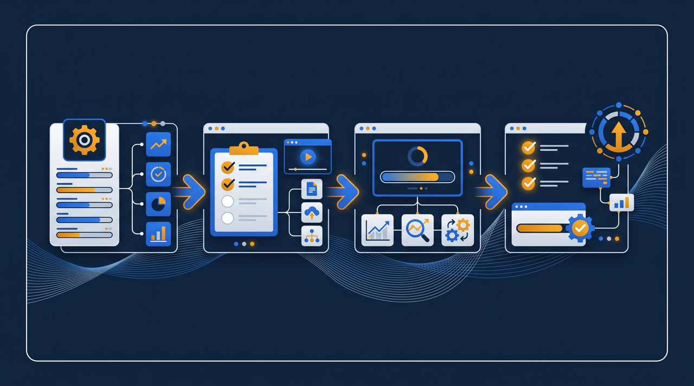

「いい講座を作ったのに、どうやって売ればいいか分からない」——オンライン講座の販売でつまずく多くは、中身ではなく仕組みのほうです。申込を受けて、支払いを確認して、視聴できるようにして……これを毎回手作業でやっていては、人数が増えるほど回らなくなります。この記事では、決済と受講登録を連動させて、eラーニングを「売れる商品」に仕立てる手順を、申込から配信・サポートまでの流れに沿って整理します。

オンライン講座の販売とは？まず全体像を整理する
オンライン講座の販売とは、作った講座コンテンツをインターネット経由で受講者に届け、受講料を得ることを指します。集合研修のように会場や日程に縛られず、受講者は自分の都合のいいときに学べる。提供する側も、一度作った講座を何度でも届けられる。この身軽さが、オンライン講座の大きな魅力なんですね。
ただ、講座そのものができたからといって、すぐ売れるわけではありません。販売には、いくつかの要素が一本の流れでつながっている必要があります。整理すると、おおむね次の4つです。
- 販売する講座コンテンツ（動画・資料・確認テストなど）
- 申込と支払いを受け付ける仕組み（決済）
- 受講者が視聴できる配信環境（eラーニングの土台）
- 受講後の質問対応・修了確認といったサポート体制
この4つが別々に動いていると、申込のたびに「入金を確認して、手作業で登録して、視聴URLを送って……」という作業が発生します。受講者が数人ならまだしも、増えてくると追いつかなくなりますよね。だから、これらを一本でつなぐ発想が大切になります。経済産業省の電子商取引に関する調査でも、オンラインでの取引は年々広がっていることが示されていますが、それを支えているのは、申込から提供までがなめらかにつながった仕組みだといえます。
ここで意識したいのは、受講者から見た「買いやすさ」と「学びやすさ」です。どんなに中身の良い講座でも、申し込みの手順が分かりにくかったり、支払いの方法が限られていたりすると、そこで離れてしまう人が出ます。学び始めてからも、視聴の仕方が分からない、どこまで進んだか把握できない、といった状態だと、途中で止まってしまいます。販売の仕組みを整えるというのは、突き詰めれば「受講者がつまずかずに、申込から学び終わりまでたどり着ける道を用意する」ことなんですね。中身づくりと同じくらい、この道筋づくりが売上を左右します。
決済連動とは？なぜ手作業のつなぎではいけないのか
ここで鍵になるのが「決済連動」という考え方です。決済連動とは、受講者が申し込んで支払いを済ませると、その情報をもとに自動で受講登録が行われ、講座を視聴できるようになる仕組みのことです。申込・入金確認・登録という一連の流れを、手作業ではなく仕組みでつなぐわけですね。
これがなぜ大事なのか。理由を3つ挙げてみます。
1. 受講者を待たせない
人は「学びたい」と思った勢いがあるうちに始めたいものです。申し込んだのに、入金確認の連絡が翌日、視聴開始がさらにその後——では、せっかくの熱が冷めてしまいます。決済連動なら、支払いが済んだその場で視聴を始められるので、受講者の気持ちを取りこぼしにくくなります。
2. 運営側の事務作業が減る
申込のたびに人が確認して登録する作業は、地味ですが負担が大きいものです。しかも、人がやる以上は登録の漏れや遅れも起こりえます。決済と受講登録がつながっていれば、この事務作業そのものがなくなり、運営側は講座の中身を良くすることや、受講者のサポートに時間を使えるようになります。
3. 人数が増えても回り続ける
手作業のつなぎは、人数が増えるほど苦しくなります。一方で、決済連動の仕組みは、10人でも100人でも同じように回ります。販売を広げていきたいなら、最初から仕組みでつないでおくほうが、後で詰まらずに済むわけです。とくに、講座が話題になって申込が一時的に集中したようなときこそ、仕組みでつないであるかどうかで明暗が分かれます。手作業だと対応しきれず、せっかくの機会を取りこぼしかねませんが、自動でつながっていれば、申込が増えても同じ流れで受け止められます。
ある事例を挙げます。ある事業者が、当初は申込フォームと振込確認を手作業でつないで講座を売っていました。最初の数人はそれで回っていたものの、受講者が増えるにつれ、入金確認と登録に追われるようになり、視聴開始までの待ち時間に不満の声も出てきたそうです。そこで申込・決済・受講登録が連動する環境に切り替えたところ、申込から視聴開始までが自動で進むようになり、事務の負担も問い合わせも減った、という流れでした。手作業のつなぎは、最初は問題なく見えて、規模が大きくなってから効いてくるんですね。
もう一つ、決済連動には見落とされやすい利点があります。それは、申込から視聴までの流れが整っていると、夜間や休日に申し込まれても取りこぼさない、という点です。学びたいと思うタイミングは人それぞれで、平日の日中とは限りません。手作業の確認だと、営業時間外の申込は翌営業日まで待たせることになりますが、連動の仕組みがあれば、いつ申し込まれてもその場で視聴を始められます。オンラインで売る以上、相手の都合のいい時間に応えられるかどうかは、地味ですが効いてくる差なんです。

決済連動でeラーニングを商品化する4つのステップ
では、決済と受講登録を連動させて、オンライン講座を販売できる状態にするには、どう進めればいいのでしょうか。一度に大きく構えるより、1本の講座を通しで回せる形にするところから始めるのがおすすめです。
ステップ1：販売する講座を1本に絞って整える
まずは販売する講座を1本に絞ります。動画・資料・確認テストなど、受講者が学び切れる構成に整えましょう。あれもこれもと並べる前に、1本を「お金を払う価値がある」と感じてもらえる形にすることが先です。ここがそろっていないと、どんなに販売の仕組みを整えても続きません。中身に自信が持てる1本があれば、それが次の講座を作るときの型にもなり、二本目以降の制作がぐっと楽になります。
ステップ2：申込から視聴開始までの流れを設計する
次に、受講者がどういう順番で進むかを書き出します。講座を知り、申し込み、支払い、視聴できるようになる、という流れです。このとき、それぞれの段階の間に手作業の確認が挟まっていないかを見ます。挟まっているなら、そこが詰まりやすい箇所です。流れを通しで描くと、どこを自動でつなぐべきかが見えてきます。実際に自分で受講者になったつもりで一度たどってみると、分かりにくい箇所や手間取る場面が見つかりやすくなります。
ステップ3：決済の手段を比較して選ぶ
支払いを受け付ける手段を選びます。クレジットカード、銀行振込、各種のオンライン決済など、複数の選択肢があります。選ぶときは、受講者にとっての支払いやすさ、手数料、入金までの期間、そして受講登録の仕組みと連携できるかを見比べるとよいでしょう。特定の手段がすべての場合に適しているわけではないので、対象とする受講者層と自社の条件に合わせて検討することをおすすめします。
ステップ4：決済と受講登録を連動できる環境を整える
最後に、決済と受講登録を連動できる配信環境を整えます。学習管理システム（LMS）の中には、申込・支払いと受講登録をつなげ、視聴・進捗管理・修了証の発行までを一本で扱えるものがあります。こうした環境を使うと、申込から視聴開始までが自動で進み、運営側は中身とサポートに集中できます。無料の動画共有サービスでも動画を見せること自体はできますが、申込・支払い・受講管理・修了記録までを一本でつなぐのは難しい場合が多いため、有料で販売するなら連動できる環境のほうが運用しやすい傾向があります。

申込・配信・サポートをつなぐと、運営はどう変わるのか
ここで少し、決済連動の仕組みが回り始めた状態をイメージしてみましょう。受講者が講座のページから申し込み、その場で支払いを済ませると、自動で受講登録が行われ、すぐに視聴を始められる。運営側は、入金確認や登録の作業に追われることなく、講座の改善や受講者の質問への対応に時間を使えます。受講者が増えても、この流れは同じように回り続けるわけです。
配信の面でも、学習管理システムを使っていれば、誰がどこまで視聴したかが記録されます。途中で止まっている受講者に案内を送ったり、修了した人に修了証を発行したりといった対応も、仕組みの中で行えます。販売して終わりではなく、受講者が学び切るところまで支えられるんですね。
サポートも、あらかじめ整えておくと運営が楽になります。よくある質問をまとめておく、問い合わせの窓口を一本化する、視聴できないときの対処を案内しておく——こうした準備があると、受講者は安心して学べますし、運営側も同じ対応を何度も繰り返さずに済みます。申込・配信・サポートが一本でつながると、オンライン講座の販売は「売る作業」から「届け続ける仕組み」へと変わっていくわけです。
さらに、修了の記録が残ることには別の価値もあります。受講者が学び終えたことを証明できると、企業がまとめて研修として使う場面でも扱いやすくなります。たとえば、社員の教育の一環として講座を導入したい会社にとっては、「誰が修了したか」が記録に残ることが導入の条件になることもあります。受講管理と修了記録の仕組みがあると、個人向けだけでなく、企業向けのまとまった販売にも応えやすくなる、というわけです。販売の幅を広げたいなら、この記録の仕組みは早めに整えておく価値があります。
価格については、制作にかけた費用だけで決めるのではなく、受講者が得られる成果や、同種の講座・研修の相場を踏まえて決めると整理しやすくなります。買い切り、一定期間のアクセス権、月ごとの利用など、提供の形によって価格の付け方を変える方法もあります。最初から固定せず、反応を見ながら見直す前提で始めると無理がありません。中小企業庁やJ-Net21などの公的な情報でも、新たなサービスを展開する際の価格設定や販路の考え方が紹介されているので、こうした情報も参考にするとよいでしょう。
まとめ：申込から配信までを一本でつなぐ
オンライン講座の販売は、講座を作ることと、それを届ける仕組みを整えることの、両輪で成り立っています。とくに、申込・支払い・受講登録という流れを手作業ではなく決済連動でつなぐことが、受講者を待たせず、運営の負担を抑え、人数が増えても回り続ける販売の土台になります。
進め方としては、販売する講座を1本に絞って整え、申込から視聴開始までの流れを設計し、決済の手段を比較して選び、決済と受講登録を連動できる環境を整える。この順で進めれば、無理なく1本の講座を売れる状態にできます。そして、配信とサポートまで一本でつながれば、オンライン講座の販売は「届け続ける仕組み」として安定して回り始めます。
なお、社内向けの教育コンテンツを整える段階では、人材開発支援助成金のように、訓練にかかった経費や賃金の一部を国が助成する制度を活用できる場合があります。教育の整備と、その先のオンライン講座としての販売を見据えた準備を、あわせて検討してみるのもよいでしょう。まずは販売する講座を1本に絞り、申込から視聴開始までを通しで設計するところから始めてみてください。
よくある質問
受講者が申し込んで支払いを済ませると、その情報をもとに自動で受講登録が行われ、講座を視聴できるようになる仕組みのことを指します。申込・入金確認・登録を手作業でつなぐ必要がなくなり、受講者を待たせず、運営側の事務作業も減らせる点が特徴です。
大きく分けて、販売する講座コンテンツ、申込と支払いを受け付ける仕組み、視聴できる配信環境、受講後のサポート体制の4つが挙げられます。これらが申込から配信まで一本の流れでつながっていると、受講者にとっても運営側にとっても無理のない販売になります。
受講者にとっての支払いやすさ、手数料、入金までの期間、受講登録の仕組みとの連携のしやすさなどを比較して選ぶと整理しやすくなります。クレジットカード・銀行振込・各種のオンライン決済など複数の手段があり、対象とする受講者層に合わせて検討するとよいです。特定の手段がすべてに適しているわけではないため、自社の条件で見比べることをおすすめします。
動画を見せること自体はできますが、申込と支払い、受講登録、修了の記録までを一本でつなぐのは難しい場合が多いです。有料で販売し、受講管理や修了証の発行まで行うのであれば、決済と受講登録を連動できる学習管理システム（LMS）のような環境のほうが運用しやすい傾向があります。
制作にかけた費用だけでなく、受講者が得られる成果や、同種の講座・研修の相場を踏まえて決めると整理しやすくなります。買い切り、一定期間のアクセス権、月ごとの利用など、提供の形によって価格の付け方を変える方法もあります。最初から固定せず、反応を見ながら見直す前提で始めると無理がありません。
まずは販売する講座を1本に絞り、申込から支払い、視聴開始までの流れを通しで設計するところから始めると着手しやすいです。最初から多くの講座を並べるより、1本で申込から配信までを回せる状態を作り、そこで得た手応えをもとに広げるほうが、つまずきにくい傾向があります。